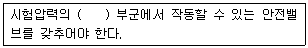
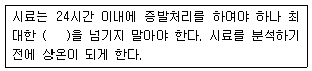
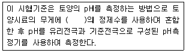
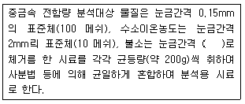
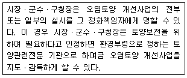
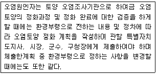
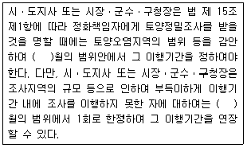
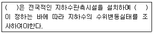
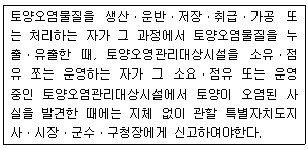

토양환경기사 (2017-05-07 기출문제)
1과목: 토양학개론
1. 점토나 실트로 구성된 퇴적물이나 세일과 같은 암석으로 구성된 지층으로 지하수는 다향 포함하고 있으나 투수성이 충분하지 않아 경제적 지하수 개발을 할수 없는 지층은?
- 지연대수층
- 피압 대수층
- 비산출 대수층
- 비유동 대수층
(정답률: 71%)

2. 수리지질학적 용어 및 내용에 대한 설명으로 잘못된 것은?
- 공극률은 대수층 내에 발달된 틈 및 공간의 양을 나타내는 단위이다.
- 비산출률은 유효공극률이라고도 한다.
- 비산출률은 공극률보다 항상 작다.
- 일반적으로 점토의 공극률은 모래의 공극률보다 작다.
(정답률: 79%)
3. 폐기물 매립지역 선정 시 고려해야 할 토양특성 중 가장 관계 없는 것은?
- 이온교환량
- 투수계수
- 토성
- 전질소 함량
(정답률: 78%)
4. 점토 광물 중 외부적인 요인을 배제하고 점토광물 자체에 중금속 흡착율이 가장 낮은 것은?
- 카올리나이트
- 일라이트
- 스멕타이트
- 몬모릴로나이트
(정답률: 89%)
5. 토양수분장력 중 응집력에 대한 설명으로 맞은 것은?
- 고체-액체 계면의 토양입자와 물분자간에 작용하는 장력
- 고체-액체 계면의 토양입자들 간에 작용하는 장력
- 고체-액체 계면의 물분자와 계면에서 더 떨어진 물분자들 간에 작용하는 장력
- 고체-액체 계면의 물분자와 공극 내 가스상 물질의 분자들 간에 작용하는 장력
(정답률: 83%)
6. PCE가 토양 중에서 분해되어 나타나는 최종산물은?
- vinyl chloride
- TCE
- 물, 이산화탄소, 염소
- 물, 이상화황, 이산화질소
(정답률: 88%)
7. 토양 중 Na+의 양이 300 cmolc/kg일 때 이 토양 500g에 흡착되어 있는 교환성 Na+의 양(g)은? (단, Na의 원자량 = 23)
- 36.8
- 34.5
- 38.2
- 32.9
(정답률: 62%)
8. 비료 중 토양을 산성화 시키지 않은 것은?
- 황산암모늄
- 소석회
- 요소
- 염화칼륨
(정답률: 82%)
9. 염류화방지를 위한 방법으로 가장 거리가 먼 것은?
- 염류를 함유하지 않은 물을 관개수로 사용
- 지표면 수분증발을 감소시키기 위한 표층토양에 대한 유기물의 혼합
- 지하수의 상향이동 촉진을 통한 토양표면의 염류량 희석
- 아스팔트 피막이나 비닐 등의 불투수막을 이용한 토양 하층부의 염류 상승 방지
(정답률: 73%)
10. 구리(Cu)에 대한 설명으로 옮지 않은 것은?
- 돼지의 배설물을 토양에 과잉으로 투기하면 구리(Cu)가 집적될 수 있다.
- 토양 중 구리(Cu)함량이 높으면 미량원소가 식물에 흡수될떄 영향을 받는다.
- 토양 중 구리(Cu)농도가 높으면 식물체에 철(Fe)의 과잉현상이 일어난다.
- 토양 중 구리(Cu)는 이동성이 적고 치환되기 어렵다.
(정답률: 77%)
11. 아연 광산에서 발견되기 쉬우며 대표적으로 이따이이따이병을 유발하는 중금속은?
- 납
- 수은
- 불소
- 카드뮴
(정답률: 87%)
12. 토양단면(층위)을 설명한 내용으로 틀린 것은?
- R층은 단단한 모암층이다.
- A층은 유기물이 퇴적되어 있는 O층 바로 밑의 층이다.
- C층은 풍화작용이 활발하게 진행되는 모재층이다.
- B층은 토양의 구조가 뚜렷하게 구분되는 것이 특징이다.
(정답률: 85%)
13. 지하수의 흐름을 설명하기위한 Darcy법칙에서 사용되는 인자와 가장 거리가 먼 것은?
- 입자비중
- 단면적
- 수두차
- 수리전도도
(정답률: 85%)
14. 토양의 체분석 결과 D10 = 0.⑤mm, D30= 0.15mm, D60 = 0.75mm 으로 나타났을 때 토양의 곡률계수(Cz)는?
- 0.20
- 0.40
- 0.60
- 0.80
(정답률: 82%)
15. 매립장의 폐기물을 수거한 후 토양조사를 실시하여보니, 6가 크롬 농도가 3mg/kg, 이 농도에 해당하는 토양은 1250ton 이었다. 처리해야 항 6가 크롬의 양(kg)은? (단, 완전 처리기준)
- 3.45
- 3.75
- 4.25
- 4.55
(정답률: 88%)
16. 토양 표면의 약한 흐름이 모여 작은 흐름이 되고 이것이 표토를 씻어 내리는 침식은?
- 면상침식
- 세류침식
- 협곡침식
- 가속침식
(정답률: 89%)
17. 토양의 수분보유능력이 가장 클 것으로 예상되는 토성은?
- 사토
- 미사토
- 양토
- 식토
(정답률: 77%)
18. 토양의 공극률(porosity)이 0.3일 때, 이 토양의 공극비는?
- 약 0.23
- 약 0.33
- 약 0.43
- 약 0.53
(정답률: 72%)
19. 물리학적으로 구분된 토양수분 중 흡습수외부에 표면장역과 중력이 평형을 유지하여 존재하는 물로 pF가 2.54~4.5 범위에 있는 것은?
- 결합수
- 유효수분
- 중력수
- 모세관수
(정답률: 85%)
20. 토양의 입단(粒團)에 관한 내용으로 틀린 것은?
- 작은 토양입자들이 서로 응집한 덩어리 형태의 토야을 말한다.
- 수분 보유력과 통기성 저하의 원인이며 식물 생육에 문제를 발시킨다.
- 음으로 하전된 점토 사이에 다가 양이온이 위치하여 정전기적인 힘에 의해 점토가 서로 끌리는 현상에 의행 입단이 일어난다.
- 양으로 하전된 점토와 음으로 하전된 점토가 서로 끌리는 현상에 의해 입단이 일어난다.
(정답률: 79%)
2과목: 토양 및 지하수 오염조사기술
21. 원자흡수분광광도법의 분석에서 사용되는 조연성가스와 가연성가스에 대한 설명으로 거리가 먼 것은?
- 일반적으로 가연성가스로 아세틸렌을 조연성가스로 공기를 사용한다.
- 수소-공기와 아세틸렌-공기는 거의 대부분의 원소 분석에 유효하게 사용할 수 있다.
- 어떠한 종류의 불꽃이라도 가연성 가스와 조연성 가스의 혼합비는 감도에 크게 영향을 주므로 금속의 종류에 따라 최적혼합비를 선택하여 사용한다.
- 수소-공기는 원자 외 영역에서 불꽃자체에 의한 흡수가 많기 때문에 이 파장영역에서 흡수선을 잦는 원소의 분석에 적당하지 않다.
(정답률: 78%)
22. 정량한계와 표준편차의 관계로 옳은 것은?
- 정량한계 = 3 × 표준편차
- 정량한계 = 3.3 × 표준편차
- 정량한계 = 5 × 표준편차
- 정량한계 = 10 × 표준편차
(정답률: 90%)
23. 배관시설에 대한 누출건사방법으로 가압 및 미감압시험법 적용 시 검사기기 및 기구 중 안전장치에 관한 내용으로 ( )에 옳은 것은?

- 1.1배
- 3.3배
- 5.5배
- 7.7배
(정답률: 83%)
24. 시료에 염화제일주석을 넣어 금속수은으로 환원시킨 다음 이 용액에 통기하여 발생되는 수은증기를 이용하여 수은을 정량하는 방법은?
- 유리전극법
- 냉증기 원자흡수분광광도법
- 자외선/가시선 분광법
- 유도결합플라스마-원자발광분광법
(정답률: 90%)
25. 납(Pb) 분석에 관한 설명으로 가장 거리가 먼 것은?
- 원자흡수분광광도법으로 측정할 수 있다.
- 원자흡수분광광도법의 측정파장은 220nm이다.
- 니켈, 아연, 카드뮴 분석 시 시료 중에 알칼리금속의 할로겐 화합물을 다향 한유하는 경우에는 분자 흡수나 광 산란에 의하여 오차를 발생하므로 추출법으로 카드뮴을 분리하여 시험한다.
- 유도결합플라스마-원자발광광도법에 사용되는 아르곤가스는 액화 또는 압축아르곤으로 순도 99.99 V/V% 이상이다.
(정답률: 71%)
26. 광산활동지역에 대한 개황조사를 실시하는 경우 채취해야 할 총 시료의 수(개)는?
- 9
- 10
- 11
- 12
(정답률: 56%)
27. 흡광광도 시험을 위한 흡수셀의 재질에 따른 측정파장범위로 옳은 것은?
- 유리재질 흡수셀은 근자외부 파장범위 측정
- 석영재질 흡수셀은 자외부 파장범위 측정
- 플라스틱재질 흡수셀은 주로 가시광선 및 근적외부 파장법위 측정
- 아크릴재질 흡수셀은 근자외부 파장범위 측정
(정답률: 68%)
28. 오염부지에서 채취한 토양시료의 화학적 전처리를 위한 수은 이외의 불소 및 중금속 분석시료의 조제방법으로 틀린 것은?
- 불소는 눈금간격 0.075mm의 표준체(200메쉬)로 체거름 한 시료
- 니켈, 아연 등 중금속 전함량 분석대상 물질은 눈금간격 0.15mm의 (100메쉬)로 체거름한 시료
- 비소의 가용성 함량 분석대상 물질은 눈금간격 0.15mm의 표준체(100메쉬)로 체거름 한 시료
- 카드뮴, 납, 구리 등의 중금속 가용성 함량 분석 대상 물질은 눈금간격 2mm의 표준체(100메쉬)로 체거름 한 시료
(정답률: 50%)
29. 토양오염공정시험기준에서 사용하는 용어 등에 관한 설명으로 틀린 것은?
- 가스체의 농도는 표준상태(0℃, 1기압, 상대습도 100%)로 환산 표시한다.
- 실온은 1~35℃로 하며, 찬 곳은 따로 규정이 없는 한 0~15℃인 곳을 뜻한다.
- 제반시험 조작은 따로 규정이 없는 한 사온에서 실시하고 조작 직후 그 결과를 관찰하는 것으로 하고, 온도의 영향이 있는 것의 판정은 표준온도를 기준으로 한다.
- 액체시약의 논도에 있어서 연산 (1+2)이라고 되어있을 때에는 염산 1mL와 물 2mL를 혼합하여 조제한 것을 말한다.
(정답률: 75%)
30. 토양시료의 분서에 필요한 2N 황산용액을 조제하고자 한다. 가장 적절한 방법은?(단, 95% 황산, 황산의 비중 = 1.84g/mL)
- 황산 60mL를 물 1L중에 섞으면서 천천히 넣는다.
- 황산 120mL를 물 1L중에 섞으면서 천천히 넣는다.
- 황산 180mL를 물 1L중에 섞으면서 천천히 넣는다.
- 황산 240mL를 물 1L중에 섞으면서 천천히 넣는다.
(정답률: 59%)
31. 토양 내 수분 함량 측정을 위한 시료 관리에 관한 내용으로 ( )에 내용으로 옳은 것은?

- 2일
- 3일
- 5일
- 7일
(정답률: 88%)
32. 토양오염관리대상시설지역 토양시료의 채취 및 보관에 관한 설명으로 틀린 것은 ?
- 토양시료는 직경 2.5cm 이상의 시료채취봉이 들어있는 타격식이나 나선형식의 토양시추 장비로 채취한다.
- 시료채취 봉을 꺼내어 오염의 개연성이 가장 높다고 판단되는 부위 ±15cm를 시료부위로 한다.
- 오염의 개연성이 판단되지 않을 경우는 시료채취 봉 중앙의 토양 15cm를 시료부위로 한다.
- 토양시추장비는 시추 중에 물이나 기름이 유입되지 않는 것이어야 한다.
(정답률: 83%)
33. 저장물징이 있는 지하매설저장시설의 누출검사와 관련한 설명으로 틀린 것은?
- 기상부의 누출검사는 20℃에서 점도가 100cSt 미만, 내용적이 1000L 미만의 액체를 저장하는 지하매설 저장시설에 적용한다.
- 기상부의 누출검사 시 지하매설저장시설내의 기상부 높이는 400mm 이상이어야 한다.
- 기상부의 누출건사시 가솔린을 저장하는 시설에 있어서 기상부의 공간면적은 3000L이상 이어야 한다.
- 액상부의 누출검사는 시설의 액량이 누출측정기기가 측정할 수 있는 저장시설 높이의 범위인 경우에 적용한다.
(정답률: 71%)
34. BTEX를 기체크로마토그래프법에 의해 정량할 때 추출용액은?
- 사염화탄소
- 아세톤
- 메틸알콜
- 톨루엔
(정답률: 69%)
35. 저장물질이 없는 누출검사대상시설의 누출검사방법인 가압시헙법에 사용되는 기기 및 기구에 관한 설명으로 틀린 것은?
- 가압장치 : 불활성가스 용기 및 압력조정장치
- 안전밸브 : 5kgf/cm2 이하에서 작동될 것
- 압력계(압력자기기록계) : 최소눈금이 시험압력의 5% 이내이고, 이를 읽고 측정압력의 기록이 가능한 압력계
- 온도계 : 시험압력에 충분히 견딜 수 있는 것으로서 최소 눈금 1℃ 이하를 읽고 기록이 가능한 온도계
(정답률: 79%)
36. 가용성 함량 분석대상의 중금속을 전처리할 때, 필요한 0.1N 염산 1L를 조제하고자 한다. 다음 설명 중 옳은 것은? (단, 35% 염산의 비중 = 1.18)
- 35%염산 8.84mL에 물을 넣어 1000mL로 한다.
- 35%염산 88.4mL에 물을 넣어 1000mL로 한다.
- 35%염산 0.88mL에 물을 넣어 1000mL로 한다.
- 물 1000mL에 35%염산 88.4mL를 넣는다.
(정답률: 63%)
37. 수소이온농도(유리전극법) 측정에 관한 내용으로 ( )에 옳은 내용은?

- 5배
- 10배
- 15배
- 20배
(정답률: 87%)
38. 기체크로마토그래피 검출기 중 유기질소 화합물 및 유기인 화합물을 선택적으로 검출한 수 없는 것은?
- 열전도도검출기(TCD)
- 질소인검출기(NPD)
- 불꽃광도검출기(FPD)
- 전자포착검출기(ECD)
(정답률: 45%)
39. 토양정밀조사의 세부장법 가운데 오염토양정화 및 토양오염방지를 위한 조치가 필요한 지역의 오염물질 종류, 오염면적 및 오염범위 들을 파악하기 위한 사전 개략조사는?
- 개황조사
- 기초조사
- 상황조사
- 자료조사
(정답률: 84%)
40. 시험용 시료의 조제방법에 관한 설명으로 ( )에 가장 적합한 것은?

- 0.075mm의 표준체(200 메쉬)
- 0.⑤mm의 표준체(300 메쉬)
- 0.01mm의 표준체(1500 메쉬)
- 0.0⑤mm의 표준체(300 메쉬)
(정답률: 93%)
3과목: 토양 및 지하수 오염정화 기술
41. 벤젠(C6H6)이 호기성반응으로 완전생분해 될 때 산소 1.0mg/L으로 생분해할 수 있는 벤젠의 양(mg/L)은?
- 약 0.54
- 약 0.48
- 약 0.32
- 약 0.21
(정답률: 59%)
42. 오염지하수의 정화를 위해 지하수 흐름방향의 하류에 설치되는 투수성반응벽체의 경우, 오렴물징과 반응하여 오염물질을 무해화하거나 흡착하는데 사용되는 반응물질(reactivematerial)로 사용될 수 없는 것은?
- 영가철(Fe0)
- 석회
- 활성탄
- 영가납(Pb0)
(정답률: 77%)
43. 토양 내 중금속 오염 처리에 대한 설명으로 틀린 것은?
- 토양에 석회질 자재를 투여하여 pH를 높이면 카드뮴, 철 등은 수산화물로 침전된다.
- 오염토양에 인산 자재를 투입하면 망간 등은 용해성 인산염을 생성함으로써 중금속이 제거된다.
- 토양이 환원상태로 되면 카드뮴은 H2S와 반응하여 난용성의 황화물을 형성함으로써 불용화된다.
- 중금속처리가 가능한 식물을 이용하여 토양 중의 중금속을 제거할 수 있다.
(정답률: 68%)
44. 토양의 열처리 기술 중 열스크루 공정에 대한 설명으로 틀린 것은?
- 열스크루 장치는 장치 용적에 비해 열전달 표면적이 비교적 넓다.
- 열스크루 공정의 열전달 유체는 직접연소 또는 전기적 장치에 의해서 가열된다.
- 열스크루 공정은 고형물의 온도가 최대 허용가능한 열전달 유체의 온도에 의해 제한된다.
- 열스크루 장치는 같은 용량의 장치에 비해 장치가 크고 열전달효율이 낮은 단점이 있다.
(정답률: 84%)
45. 퇴비화공법의 처리 조건으로 적절하지 않는 것은?
- 제어 온도를 35~45℃로 유지
- C : N의 비율을 27 : 1 정도로 유지
- pH는 중성에 가깝게 유지
- 함수율을 50~60% 정도로 유지
(정답률: 47%)
46. 토양정화기술 중 열탈착법의 장ㆍ단점으로 가장 거리가 먼 것은?
- 부지 내 및 부지 외 처리가 가능
- 비교적 많은 오염토양처리 시 경제성 있음
- 전처리 없이 수분함량이 높은 오염토양처리가 가능
- 고농도 hot spot 처리 가능
(정답률: 92%)
47. 양수 후 처리방법에 관한 설명으로 가장 거리가 먼 것은?
- 양수를 중단하였다가 일정기간 이후 재개할 경우 오염물질 농도는 급격히 증가한다.
- 정화기간이 비교적 길어질 수 있다.
- 비수용상액체가 존재하는 한 계속 운영되어야할 것이다.
- 많은 복원비용이 소요된다.
(정답률: 53%)
48. 바이오파일의 장ㆍ단점으로 가장 거리가 먼 것은?
- 설계 및 운영이 쉽다.
- 휘발물질 유출방지가 가능하다.
- 배기가스 처리가 필요없다.
- 지하수오렴 방지 라이너시설이 필요하다.
(정답률: 70%)
49. TCE로 오렴된 지하수를 양수하여 포기조 내에서 공기 분산법으로 제거하는 경우, 포기조 부피가 750m3 인 처리장에 1일 300m3의 오염 지하수가 유입된다면 포기 시간(hr)은?
- 4
- 6
- 8
- 10
(정답률: 60%)
50. 자연정화기법에 의하여 오염부지를 처리하는 경우에 작용하는 현상이 아닌 것은?
- 오염물질의 자체적인 분산, 희석, 흡착, 휘발 현상
- 지하수 함량에 의한 희석과 혼합현상
- 토양 내 생분해로 인한 생물학적 분해 및 전이현상
- 계면활성제의 주입에 의한 오염물질 탈착현상
(정답률: 83%)
51. 중금속으로 오염된 토양을 처리할 경우 효율이 가장 낮은 기술은?
- Bioleaching
- Stabilization
- Bioaccumulation
- Landfarming
(정답률: 64%)
52. 식물정화법에서 식물은 독성물질을 분해하는 효소를 분비하여 처리한다. 제초제를 처리할 수 있는 효소셰로 옳은 것은?
- nitrilase
- nitroreductase
- dehalogenase
- peroxidase
(정답률: 61%)
53. 유류오염부지에 생물통기법을 적용하기위하여 산소소모율을 측정한 시험 결과가 다음과 같다면 평균 산소소모율(O2%/day)은? (단, 오연 토양향 = 500m3, 주입공기량 = 100m3/day, 산소 농도 = 21%, 배기가스산소농도 = 10%, 토양부피 중 공기가 차지하는 부피분율 = 25%)
- 약 5.5
- 약 6.4
- 약 7.6
- 약 8.8
(정답률: 57%)
54. 지중 내에 직류전기를 공급하여 지반으로부터 오염물질을 추출하는 기술의 장ㆍ단점으로 틀린 것은?
- 지반 매트릭스자체에 미치는 영향이 정확하게 규명되지 않은 단점이 있음
- 염이나 2차 광물의 침전으로 효율이 상승되는 장점이 있음
- 오염지역 복원이 영구적인 장점이 있음
- 오염된 지중용액을 집수정으로부터 쉽게 추출할 수 있는 장점이 있음
(정답률: 61%)
55. 오염지하수정화에 반응벽체 공법을 적용할 때 반응벽체의 두께가 3m, 지하수의 선속도가 0.2m/hr일 경우 지하수의 반응벽체 통과시간(hr)은?
- 6
- 60
- 1.5
- 15
(정답률: 71%)
56. 수리전도도가 불량하고 과잉 압밀된 오염지반에 압축공기를 주입하여 여타 지중전화 기술 저용 시 오염물 처리 및 추출효율을 증대시키는 방법은?
- Pneumatic fracturing
- Co-metabolic
- Precipitation
- Direction wall
(정답률: 82%)
57. 토양증기추출법을 지하수위가 높은 경우에 적용할 때 발생하는 문제점이 아닌 것은?
- 진공 압력에 의한 지하수위 상승
- 광정 스크린 막힘 현상
- 토양 공극의 확장 현상
- 공기흐름의 감소
(정답률: 77%)
58. 토양에 함유된 화학 성분 중에서 주요 산화물의 함량순서를 바르게 나열한 것은?
- SiO2＞Al2O3＞FeO+Fe2O3＞CaO+MgO
- SiO2＞Al2O3＞CaO+MgO＞FeO+Fe2O3
- Al2O3＞SiO2＞CaO+MgO＞FeO+Fe2O3
- Al2O3＞FeO+Fe2O3＞SiO2＞ CaO+MgO
(정답률: 64%)
59. 생물학적 복원 기술에 관한 설명 중 틀린 것은?
- 저농도 및 광범위한 오염에 적합하다.
- 유해한 중간물질을 만드는 경유가 있어 분해생성물의 유무를 조사할 필요가 있다.
- 다양한 물질에 의해 오염되어 있는 경우에도 별도의 기술개발이 필요 없다.
- 약춘을 많이 사용하지 않기 때문에 2차 오염이 적다.
(정답률: 78%)
60. 난분해성과 관련된 화합물의 특성과 가장 거리가 먼 것은?
- 할로겐화된 화합물
- 가지구가가 많은 화합물
- 물에 대한 용해도가 낮은 화합물
- 원자의 전하차가 작은 화합물
(정답률: 85%)
4과목: 토양 및 지하수 환경관계법규
61. 다음에서 엄급한 '환경부령으로 정하는 토양관련전문기관'으로 옳은 것은?

- 농촌진흥청
- 한국환경공단
- 국립환경과학원
- 시ㆍ도 보건환경연구원
(정답률: 81%)
62. 환경부장관, 시도지사 또는 시장, 군수, 구청장은 토양보전을 위하여 필요하다고 인정하는 경우에는 다음의 각호에 해당하는 지역에 대한 토양정밀조사를 실시할 수 있다. 이에 해당되지 않는 것은?
- 토양오염 측정망 설치 지점 중 환경부장관, 시도지사 또는 시장, 군수, 구청장등이 전답, 임야, 공원 등 토양의 용도변경을 인정하고자 하는 지역
- 상시측정의 경과 우려기준을 넘는 지역
- 토양오염실태조사의 경과 우려기준을 넘는 지역
- 토양오염사고 등으로 인하여 환경부장과느 시도지사 또는 시장, 군수, 구청장이 우려기준을 넘을 가능성이 크다고 인정하는 지역
(정답률: 67%)
63. 지하수의 수질기준 설정 항목(일반오염물질)에 해당되는 것은? (단, 지하수를 생활용수로 사용하는 경우)
- 부유물질
- 화학적 산소요구량
- 염소이온
- 생물화학적 산소요구량
(정답률: 77%)
64. 다음 사항을 위반하여 오염토양정화계획 또는 오염토양정화변경계획을 제출하지 아니한 자에 대한 과태료 부과 기준은?

- 200만원 이하의 과태료
- 300만원 이하의 과태료
- 500만원 이하의 과태료
- 1000만원 이하의 과태료
(정답률: 60%)
65. 토양오염대책기준으로 옮은 것은?(오류 신고가 접수된 문제입니다. 반드시 정답과 해설을 확인하시기 바랍니다.)
- 카드뮴 : 75mg/kg
- 납 : 600mg/kg
- 아연 : 1200mg/kg
- 불소 : 300mg/kg
(정답률: 64%)
66. 토양정밀 조사명령 등에 관한 설명으로 ( )에 들어갈 적합한 숫자가 순서대로 나열된 것은?

- 6, 6
- 8, 6
- 6, 8
- 8, 8
(정답률: 86%)
67. 지하수의 관측 및 조사 등에 관한 설명으로 ( )에 순서대로 나열된 것은?

- 국토교통부장관 - 환경부령
- 국토교통부장관 - 대통령령
- 환경부장관 - 대통령령
- 시ㆍ도지사 - 환경부령
(정답률: 48%)
68. 지하수를 공업용수로 사용할 경우 수소이온농도(pH)의 수질 기준은?
- 1.0 ~ 3.0
- 3.5 ~ 5.5
- 5.0 ~ 9.0
- 8.5 ~ 12.0
(정답률: 86%)
69. 특정토양오염관리대상시설의 검사항목 중, 석유계총탄화수소(TPH)를 검사해야하는 유종에 해당하는 것은?
- 경유
- 나프타
- 휘발유
- 벤젠
(정답률: 50%)
70. 시장, 군수, 구청장이 오염토양개선사업의 전부 또는 일부의 실시를 그 정화책임자에게 명할 수 있다. 이 경우 실시 명령을 이행하지 아니한자 또는 실시 명령을 받고 승인을 얻지 아니하고 오염토양개선사업을 실시한 자가 받는 벌칙기준은?
- 5년 이하 징역 또는 5천만원 이하 벌금
- 3년 이하 징역 또는 3천만원 이하 벌금
- 2년 이하 징역 또는 2천만원 이하 벌금
- 1년 이하 징역 또는 1천만원 이하 벌금
(정답률: 45%)
71. 다음 중 정화책임자로 볼 수 없는 경우는?
- 토양오염물질의 누출ㆍ유츌ㆍ투기ㆍ방치 또는 그 밖의 행위로 토양오염을 발생시킨 자
- 토양오염의 방생 당시 토양오염의 원인이 된 토양오염관리대상시설의 소유자ㆍ점유자 또는 운영자
- 합병ㆍ상속이나 그 밖의 사우로 토양오염관리대상시설의 권리ㆍ의무를 포괄적으로 승계한 자
- 해당 토지를 소유 또는 점유하고 있는 중에 토양오염이 발생한 경우로서 자신이 해당 토양오염 발생에 대하여 귀책 사유가 없는 경우
(정답률: 88%)
72. 지하수의 체계적인 개발ㆍ이용 및 효율적인 보전ㆍ관리를 위하여 지라수관리기본계획의 수립시 포함되어야 할 사항으로 틀린 것은?
- 지하수의 이용실태
- 지하수의 보전계획
- 지하수의 조사에 관한 투자계획
- 지하수의 수질관리 및 정화계획
(정답률: 74%)
73. 특정토양오염관리대상시설의 변경신고 사유로 틀린 것은?
- 대표자가 변경되는 경우
- 특정토양오염관리대상시설의 관리자를 변경하는 경우
- 특정토양오염관리대상시설의 사용을 종료하거나 폐쇄하는 경우
- 특정토양오염관리대상시설에 저장하는 오염물질을 변경하는 경우
(정답률: 67%)
74. 오염지하수 중 특정유해물질에 대한 정화기준 또는 정화기준 항목에 대한 설명으로 적합하지않은 것은?
- 석유계총탄화수소가 1.5mg/L
- 시안, 수은, 유기은 항목은 불검출 준수
- 지하수를 생활용수로 이용하는 지하수의 특정유해물질은 15개 항목 준수
- 생활용수 기준 중 벤젠, 톨루엔, 에틸벤젠, 크실렌은 총함량 기준 준수
(정답률: 59%)
75. 특정토양오염관리대상시설의 설치자에 대하여 토양정밀조사 또는 오염토양의 정화조치 등의 시정을 명할 수 있다. 이 경우 토양정밀조사명령과 오염토양 정화조치명령 각각의 이행기간에 대한 설명 중 틀린 것은?
- 토양정밀조사의 이행기간은 6개월 이내에 정한다.
- 토양정밀조사의 이행기간을 부득이하게 준수하지 못한 경우 한차례에 한해서 6개월 연장할 수 있다.
- 오염토양 정화조치의 이행기간은 2년의 범위에서 정하여야 한다.
- 오염토양 정화조치의 이행기간을 부득이하게 준수하지 못한 경우 한차례에 한해서 1년 연장할 수 있다.
(정답률: 67%)
76. 지하수의 수질보전을 위하여 수질측정말 설치 및 수질오렴실태 측정 계획을 수립ㆍ고시 하여야하는 자는?
- 환경부장관
- 국토교통부장관
- 농림축산식품부장관
- 시ㆍ도지사
(정답률: 68%)
77. 토양환경보전법에 의하여 환경부장관이 고시하는 측정망설치계획에 포함되지 않는 것은?
- 측정망 설치시기
- 측정망 배치도
- 측정지점의 위치 및 면적
- 측정망 폐쇄시기
(정답률: 86%)
78. 지하수를 생활용수로 이용하는 경우 질산성질소의 지하수의 수질기준(mg/L)은?
- 1 이하
- 10 이하
- 15 이하
- 20 이하
(정답률: 65%)
79. 시ㆍ도지사 또는 시장 ㆍ군수ㆍ구청장이 토양정밀조사결과 우려기준을 넘는 경우에 기간을 정하여 오염원인자에게 조치할 수 있는 명령으로 틀린 것은?
- 해당 토양오염물질의 사용제한 도는 사용중지
- 토양오염관리대상시설의 개성 또는 이전
- 토양오염유발시설의 폐쇄조치
- 오염토양의 정화
(정답률: 71%)
80. 다음 사항을 위반하여 토양이 오염된 사실을 발견 하고도 그 사실을 신고하지 아니한 자에 대한 과태료 부과 기준은?

- 1000만원 이하
- 500만원 이하
- 300만원 이하
- 100만원 이하
(정답률: 67%)